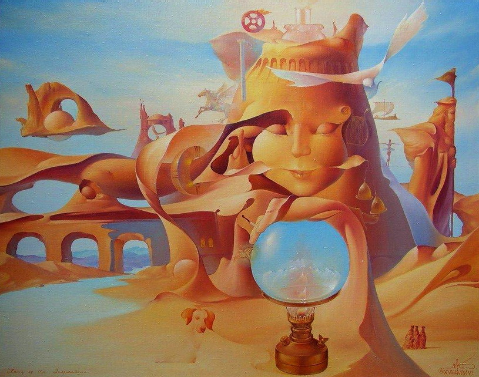

Сюрреалізм
Своєрідним виявом кризи раціоналізму в мистецтві XX століття став сюрреалізм (від франц. surralisme - надреалізм). Як художній напрямок, він сформувався в Парижі в 1919-1924 рр. і спочатку існував як літературна течія. Трохи пізніше з'явився і в Україні.
Сюрреалісти вважали, що людина живе в абсурдному, драматично-напруженому світі, воля її паралізована. Тому натхнення для творчості вони черпали у снах і галюцинаціях, вивчали малюнки дітей та психічно хворих.
Сюрреалізм як усе декадентське мистецтво має антидемократичний і антигуманістичний характер; він є виявом розкладу буржуазного мистецтва. Він сформувався як модерний художньо-літературний рух, гаслом якого стала тріада: «кохання, краса, бунт».
Сюрреалісти, з їх намаганням будь-що вирватися з пут дійсності, зазирнути за межі реальності, віднайти першопочатки буття, осягнути найглибшу сутність людини, так поціновували ранні культури - за їх здатність безпосереднього сприйняття світових сил, невидимих і заперечуваних цивілізованим оком.
З цього прагнення походить і концепція альтернативного зору, розроблена сюрреалістами, коли істинне бачення світу можливе не розплющеними, а навпаки, заплющеними очима, тому що тоді наш зір спрямований усередину, намагається заглибитися в себе і через власну сутність пізнати світ, а не через ті хибні уявлення, які пропонує нам довколишня дійсність. Тому сюрреалісти розглядають реальність лише як відправну точку для подорожі у світ мрії, а ключем до цього внутрішнього світу, світу мрій, бажань і непояснених потягів стає автоматизм, який стає основоположним поняттям у визначенні сюрреалізму.
Сюрреалісти повністю підтримували думку про вплив підсвідомого на життя кожної людини.
Художники повністю відмовилися від зображення об`єктивної реальності, для їхніх творів властиві спотворені пропорції предметів та постатей, протиприродне поєднання предметів.
|  |
Сюрреалізм відрізняється використанням ілюзій і парадоксальних поєднань форм.
Основне поняття сюрреалізму, сюрреальність - поєднання сну і реальності. Для цього сюрреалісти пропонували абсурдне, суперечливе поєднання натуралістичних образів за допомогою колажу і технології «ready - made».
Сюрреалісти були натхненні радикальної лівою ідеологією, проте революцію вони пропонували почати зі своєї свідомості. Це мистецтво мислилося ними основним інструментом звільнення від буденних проблем.
<Відрізняючись широтою підходу та багатством форм, сюрреалізм полегшив сприйняття абстрактного мистецтва, його методи та техніка вплинули на творчість письменників та художників багатьох країн світу.
Вгору